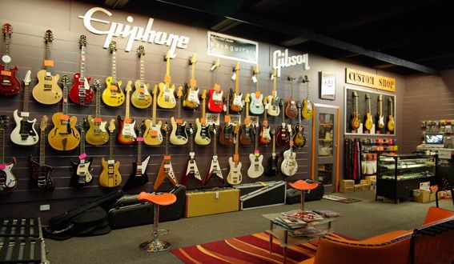
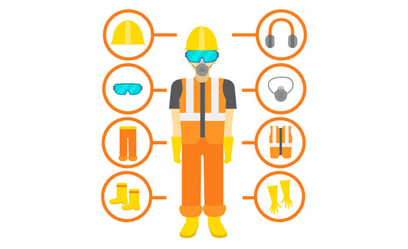

This project predicts vessel ETAs using historical AIS data and a tree-based stacking ensemble model, outperforming individual models. It highlights the value of ensemble learning for improved accuracy in maritime logistics.
This project involves cleaning and transforming retail sales data. Time series analysis reveals sales trends across various periods. Descriptive analysis pinpoints peak sales days, and product-level analysis identifies top sellers, underperformers, and key revenue drivers.

This project uses SQL queries to mine a music store's database, uncovering top spenders, popular genres by region, and customer buying habits. These insights will inform targeted marketing, inventory decisions, and artist promotions.
This project analyzes sales data to identify key customer demographics (age, gender, location, etc.) and product preferences. Findings will be used to create targeted marketing, improve the customer experience, and ultimately drive increased revenue.
This project cleans and analyzes Amazon Prime Video data to uncover content popularity, genre trends, release patterns, and content origins. Interactive dashboards visualize these insights, aiding in understanding user preferences and informing content strategies.
This project employs a Convolutional Neural Network (CNN) to accurately classify individuals wearing face masks in images. Trained on a Kaggle dataset, the model achieves high accuracy, demonstrating its potential for real-world applications in health and safety monitoring.

This study analyzes knowledge, attitudes, and practices (KAP) surrounding personal protective equipment (PPE) use in Bangladesh's stone-crushing industry. Findings will guide strategies to improve worker safety and reduce occupational hazards.